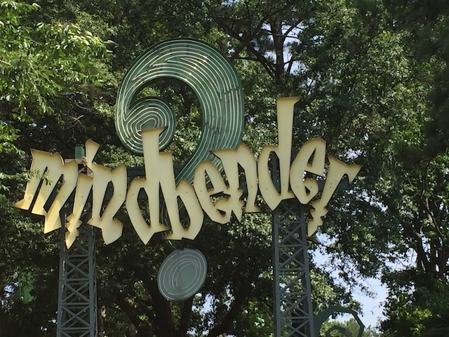
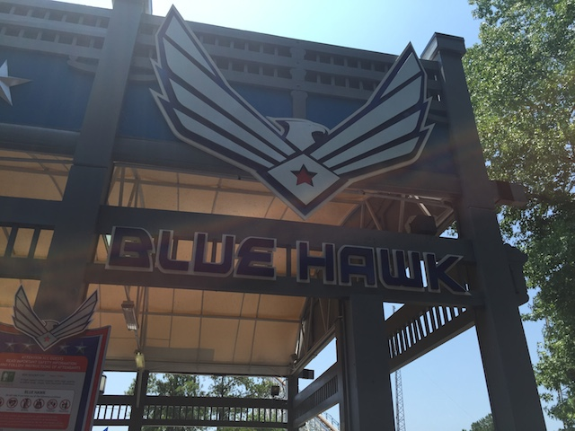
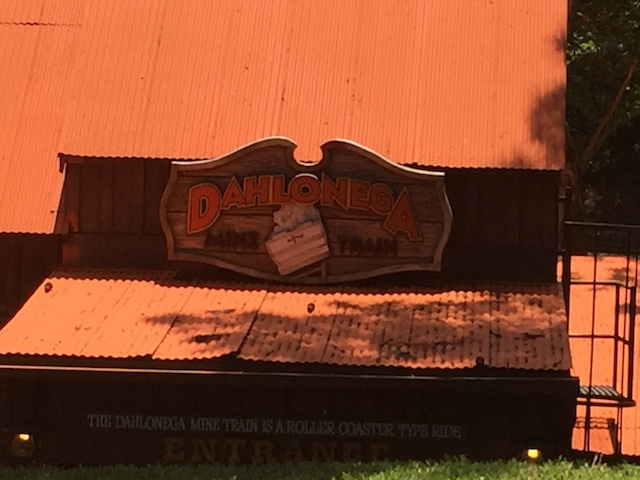
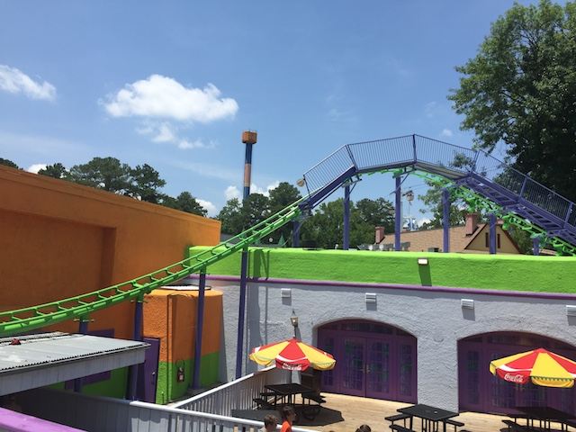
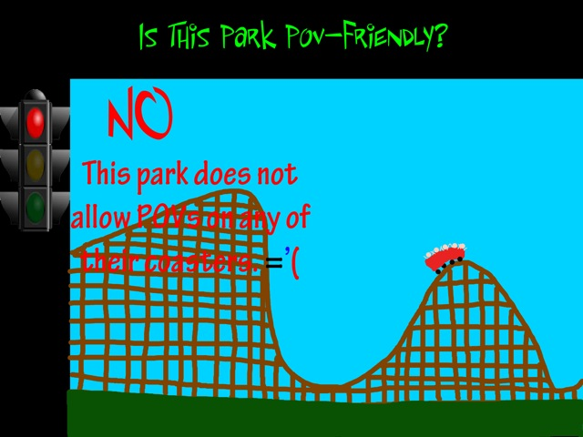

| |
Six Flags Over Georgia Review

Six Flags Over Georgia is definetly one of the more popular and well known parks in the Six Flags chain. It was the second Six Flags park to open, just right after Six Flags Over Texas. And yeah. You can definetly tell that this park has had a long history. And to make things even better, this isn't just one of the first Six Flags parks. It's also one of the best. This park is good. Really freaking good. For instance, the coaster collection consists of one of the best B&M Hypers, the 2nd best B&M Stand Up Coaster, a really good Schwarzkoph, and now they're adding an RMC. So yeah. It has a really good roller coaster collection. Nearly all the Six Flags parks have really good roller coasters. The bad ones also have really good roller coasters. Though on top of all the good roller coasters, the park itself has a really good balance, having both an amazing drop tower, a really fun and original dark ride, along with so many other random rides. What this park really has, is balance. I know I talk a lot about balance in these park reviews, as...yeah. That's very much important in a theme park. I know that this isn't one of the best parks ever. It's not going to break records, or be ranked as a Top 10 Theme Park. But for being a Six Flags park, and a standard theme park, Six Flags Over Georgia really delievers. Both for its really good roller coaster collection, and for all the other stuff that they have that we'll go over down below.
Rollercoasters
There is a link to a review of all the Rollercoasters at Six Flags Over Georgia.
Please keep in mind that there is no review of Twisted Cyclone because it didn't exist when I last visited.
Top Coasters
Goliath Review

Really Good Coasters
Batman the Ride Review

Georgia Scorcher Review

Mindbender Review

Good Coasters
Blue Hawk Review

Dare Devil Dive Review

Great American Scream Machine Review

Superman Ultimate Flight Review
Family Coasters
Dahlonega Mine Train Review

Kiddy Coasters
Joker Funhouse Coaster Review

Past Coasters
Georgia Cyclone Review
Flat Rides
Here are the reviews of all the Flat Rides at Six Flags Over Georgia. Let's start out with the star flat ride, and also just one of the best rides in the park in general. I'm talking of course, about Acrophobia. Acrophobia is one of those Gyro Drops, or as some people know them, as the Stand Up Floorless Tilting Drop Towers. It's a shame that these are the only two Gyro Drops in the world as they really are amazing rides. It may not look like an impressive drop tower due to it's incredibly small size, but never have looks been more deciving. This thing is brutal and agressive thanks to its seating and it's tilt. It's one of those rare rides that pushes the "OH SH*T!!!" button for me. And that's saying something. OK. So we just talked about Acrophobia. Going over the rest of the flat rides is pretty pointless as...you're not going to top that. But to be fair, Six Flags Over Georgia does also have a very solid flat ride collection, even outside of Acrophobia. Their next best flat ride would probably be Sky Screamer. This would be the parks Starflyer. It's not one of those monsterous star flyers, but at the same time, it's not one of the puny ones either. They're fun rides and all. Yeah, it's true that the view from the ride sucks as it's mainly just Georgia that you're seeing. But hey. It's still a pretty fun ride. Those are the main really good flat rides. There's also a handful of really fun flat rides in Gotham City, consisting of a Super Loop, a tilt a whirl, chairswings, and flyers. None of these are amazing. But the theme of them all is pretty good by Six Flags standards, and all are just a lot of fun. Oh, and of course, they have a carousel in the front, as yeah. Classic theme park attraction. You gotta have a carousel.
 Don't be deceived by this ride. It's a Top 10 Drop Ride.
Don't be deceived by this ride. It's a Top 10 Drop Ride.
Dark Rides
Yep. Six Flags Over Georgia has a dark ride. But wait! There's more! Yes! Six Flags Over Georgia does indeed, have TWO dark rides in the park! I know it's no longer considered shocking to have a dark ride in a Six Flags park, because Six Flags went crazy with the Justice League rides. Speaking of which, Six Flags Over Georgia has one. Because hey. Nearly all the Six Flags parks have one. I didn't ride it here, but I rode the one at my home park, Six Flags Magic Mountain, and I really liked it there. So hopefully it's just as good here. But let's talk about their other dark ride, as that's much more intersting. Monster Mansion. So yeah. Not only did Six Flags Over Georgia have a dark ride before that was a cool thing, but it was a unique dark ride. Not a Scooby Doo shooting dark ride, but an honest to god, totally unique, only at SFOG, dark ride. And...yeah. Monster Mansion is a fun ride. Basically, you're invited to a picnic. It's a monster picnic, but humans are allowed today. And these are the fun kind of monsters they make Pixar movies about. Not the scary real ones ruining everything. It's sort of like It's a Small World in a way. It even has an obnoxious song that's earbleedingly catchy, and yet, you still like it. So yeah. Sure. It may be stupid. But it's a ton of fun. And it's only at Six Flags Over Georgia. And I really like that.
You're invited to a picnic. Monster picnic. But humans are allowed today.
Water Rides
OK. The water ride selection at Six Flags Over Georgia isn't anything special, but they do have a decent number of water rides. OK. Let's start with the one water ride that I actually rode there. Log Jamboree. As you can tell, this is the parks log flume. And it is nothing special. You float around, and the drops on the ride. These things are cliff jumpable. I know most log flume drops aren't very big. But even by log flume standards, these drops are pretty damn small. But it's still fun. And more importantly, it gets you a little wet. And considering that Georgia gets F*CKING HOT in the summer, that's important. The park also has a rapids ride and a shoot the chute ride that I'm sure do a better job of soaking you and helping you escape the heat of the Deep South.
Small, but fun.
Water Park
Six Flags Over Georgia does indeed have an attached water park. And while it does look fun, I didn't check it out due to a lack of time.
Dining
I did not eat at Six Flags Over Georgia. Though it just seemed like standard amusement park food.
Theming and Other Attractions
Here are the reviews of all the other stuff at Six Flags Over Georgia. Now while there's not a whole lot of theming at Six Flags Over Georgia, due to the whole fact that...it's a Six Flags park. However, there is one part of the park that looks good. Really good. Gotham City. Six Flags Over Georgia has, without a doubt, the best Gotham City out of any Six Flags park. I mean, it actually looks nice. Really nice. I already mentioned this when going over the flat rides, as...yeah. The Gotham City really does make them better. I know it's nothing compared to the real big giants, like Disney, Universal, or Europa Park. But for Six Flags, it's pretty good. As far as other stuff to do...yeah. There's not a whole lot. There aren't any good shows, and Six Flags is mainly just rides. I mean, Six Flags Over Georgia is really balanced and has a great collection of rides, but there really isn't much in terms of non-ride things to do.
In Conclusion
Six Flags Over Georgia is a really good amusement park and one of the best in the Six Flags chain. The coaster collection is really good with rides such as Goliath, Georgia Scorcher, Mindbender, etc. Pretty much every coaster they have is good. Not a single bad one (I stand by liking Blue Hawk! It's underrated damn it!). And on top of that, they have a lot of other really good rides. They have one of the freakiest drop towers ever with Acrophobia, and Monster Mansion is a lot of silly fun. It's just a ton of fun. The park really does grow on you. You don't ever really get tired of the selection there, as...yeah. It has a ton of balance. And on top of all that, it's run really well. The operations are really good by Six Flags standards. Sure, there are rooms for improvement here and there, but for the most part, it really works. It totally works as the main theme park for the Atlanta area, and anyone who enjoys amusement parks should definetly check out Six Flags Over Georgia. One of the better parks, and definetly one of the best that Six Flags has to offer.
Enthusiast FAQs.
*Are there kiddy coaster restrictions? - Nope. You can ride Joker Funhouse Coaster.

Tips
*Get in line for Dare Devil Dive first thing. It gets long lines as not only is the capacity on that bad, but it might also still be doing VR (that makes lines longer).
*Crowds for this park are apparently sporadic. It wasn't bad at all when I went. But apparently it can get bad in the summers (unsurprisingly).
*Don't be afraid of Blue Hawk. It's not nearly as bad as everyone claims.
*Have Fun!!!!
Location
Austell, Georgia, USA
Theme Park Category:
Amusement Park
Last Day Visited
June 27, 2016
Video
It's best to wait to go back and shoot Twisted Cyclone video before making a SFOG video.
Complete Update List
2016
Deep South Trip 2016
Here's a link to the parks website.
Home
|